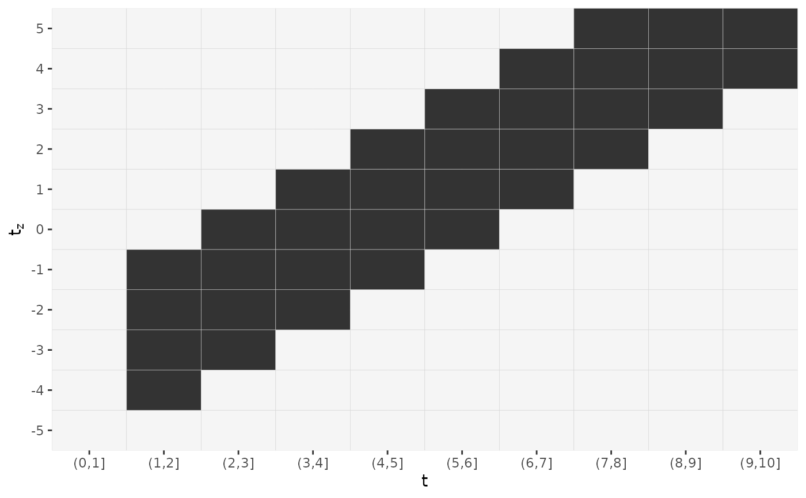

Given data defining a Lag-lead window, returns respective plot as a
ggplot2 object.
gg_laglead(x, ...)
# Default S3 method
gg_laglead(x, tz, ll_fun, ...)
# S3 method for class 'LL_df'
gg_laglead(
x,
high_col = "grey20",
low_col = "whitesmoke",
grid_col = "lightgrey",
...
)
# S3 method for class 'nested_fdf'
gg_laglead(x, ...)Either a numeric vector of follow-up cut points or a suitable object.
Further arguments passed to methods.
A vector of exposure times
Function that specifies how the lag-lead matrix should be constructed. First argument is the follow up time second argument is the time of exposure.
Color used to highlight exposure times within the lag-lead window.
Color of exposure times outside the lag-lead window.
Color of grid lines.
get_laglead
## Example 1: supply t, tz, ll_fun directly
gg_laglead(1:10, tz=-5:5,
ll_fun=function(t, tz) { t >= tz + 2 & t <= tz + 2 + 3})

## Example 2: extract information on t, tz, ll_from data with respective attributes
data("simdf_elra", package = "pammtools")
gg_laglead(simdf_elra)